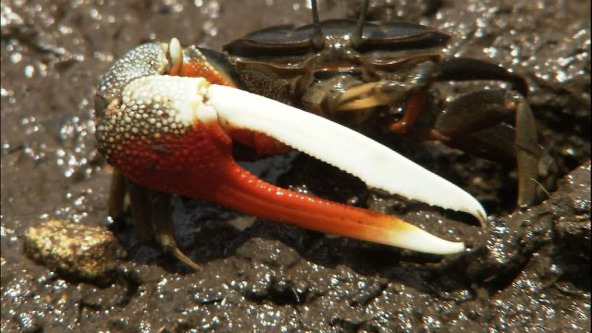
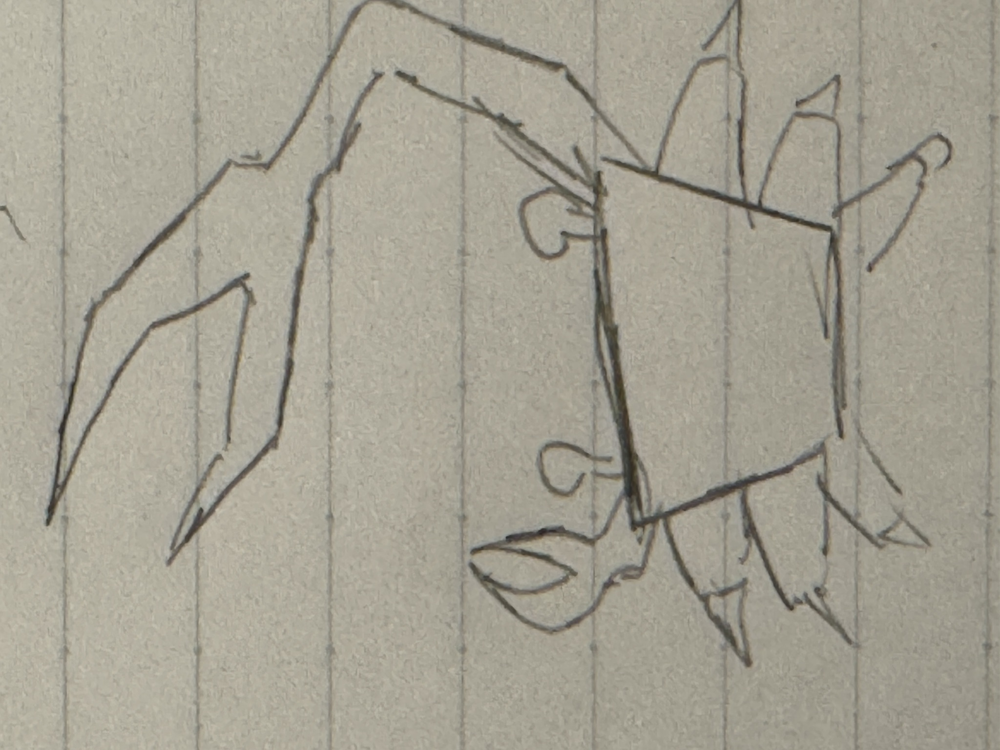
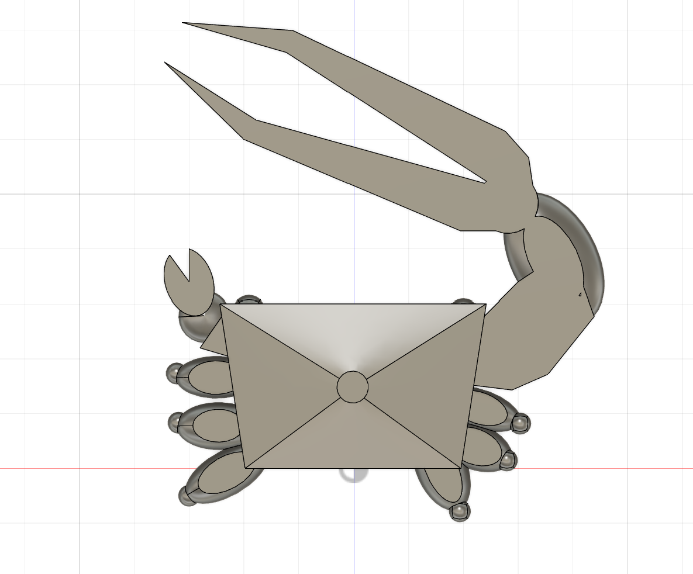
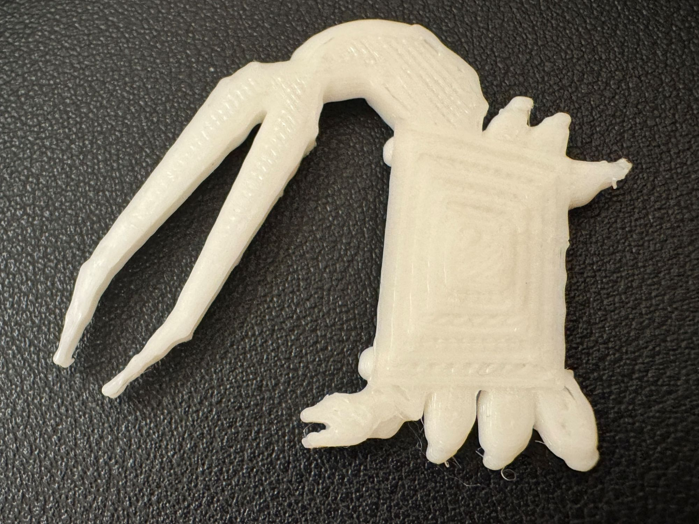

カニピンセットを作ってみた
ピンセットを作るということで、カニ型のピンセットを作ることを選びました。
ピンセットの形状がカニのハサミの部分と似ており、デザイン的にも機能的にも可愛く実用的なものになると思いました。
私が選んだカニはシオマネキという種類のカニです。
このカニの面白いところは、片方のハサミだけ大きいということです。

スケッチ

カニの画像をたくさん調べて、最終的にこの形のカニにしました。
3Dモデル

ピンセット２.stl
これが実際に私が作ったカニのピンセットの3Dモデルです。大きい方のハサミがピンセットになるように作りました。
また甲羅の部分が少し膨らむように工夫しました。
完成品

今回、初めて3Dプリンターを使ってみて、3Dプリンターの仕組みや使い方を少し理解することができました。
最初に使ったときは、3Dモデルが浮いてしまって上手く生成されなかったのですが、サポートを付けることでどうにか完成させることができました。
思っていたよりもカニの甲羅が薄くなってしまいましたが、少し膨らみが分かるようになっており、また、目の丸さも表現されていてかなりかわいいデザインになりました。
今度作るときは、もっと大きめに作って細部までこだわりたいと思います。